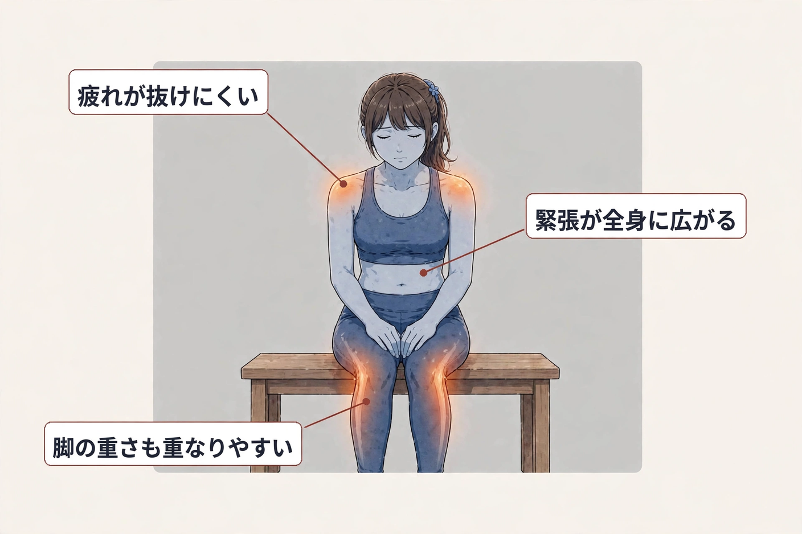

全身の疲労感・倦怠感
美容整体ステラ・ポラリス東三国｜大阪市淀川区東三国・東三国駅徒歩5分・女性向け

巡りを整える全身ケア。疲れが顔に出ない健康美
全身の疲労感や倦怠感は、睡眠の質、姿勢の崩れによる筋肉の緊張、冷え、ストレスなどが重なって感じやすくなります。休んでもすっきりしない状態が続くと、表情や姿勢にも疲れが表れ、気持ちまで沈みがちになります。東洋の養生の考え方では、体内の巡りを整え、休むことと動くことのバランスを大切にしてきました。このページでは、全身の疲労感の背景にある仕組みと、全身が軽く感じられる状態を目指す当サロンでのケア、ご自宅でできるセルフケアをご案内します。まずは下のチェックで、ご自身の状態を確かめてみてください。
ご予約はこちら（Coubic）こんなお悩みありませんか
- 休んでも疲れが抜けず、体が重い日が続く
- 朝起きたときから、体がだるく感じる
- 表情に疲れが出て、老けて見えると言われたことがある
- 肩や首だけでなく、全身が固まった感じがする
- 体が冷えやすく、なかなか温まらない
- 気分まで沈みがちで、やる気が出にくい
- 深くリラックスする時間が、最近取れていない
当てはまる項目が多いほど、睡眠・姿勢・冷えといった要素が重なり、全身の巡りが滞りやすい状態の目安とされています。疲労感は体からのサインです。次のセルフチェックで、今の体の状態の傾向を確かめてみましょう。
簡単セルフチェック（呼吸と体の力みチェック）
座ったままできる、体の緊張の傾向を知るための簡単な方法です。
- 椅子に座って目を閉じ、肩・顎・手の力を意識して抜きます。
- ゆっくり深呼吸をして、息が体のどこまで入る感じがするかを確認します。
- 力を抜いたつもりでも肩が上がったままになる、呼吸が胸のあたりで止まる感じがする場合は、全身に緊張が残っている目安と言われています。
※これは診断ではありません。ご自身の状態の傾向を知る目安としてお使いください。
全身の疲労感・倦怠感の原因と仕組み
睡眠の質との関わり
疲労感の大きな背景のひとつが、睡眠の質です。眠りが浅い、途中で目が覚める、朝すっきり起きられないといった状態が続くと、体は回復しきれないまま翌日を迎えることになります。寝る前の緊張が抜けていないと、眠りの質にも影響すると言われています。図1のように、全身の疲労感は睡眠・姿勢・巡りといった要素が重なって表れます。

図1 全身の疲労感で起こりやすい変化と、全身がゆるんだ状態のイメージ。体の状態には個人差があります。
姿勢の崩れと筋肉の緊張
姿勢が崩れた状態では、体のあちこちの筋肉が余分な力を使い続けます。本人は休んでいるつもりでも、筋肉は働き続けているため、疲れが抜けにくくなります。全身が固まった感じがするのは、この緊張の積み重ねが背景にあることが多いものです。全身を大きくゆるめることは、緊張のリセットにつながります。
冷えと巡りの滞り
冷えや巡りの滞りも、疲労感を強める要素です。巡りが滞ると、体は温まりにくく、重だるさの感覚も抜けにくくなります。東洋の養生の考え方では、巡りを整えることが体の基本を整えることとされてきました。温かく、巡りのよい状態は、軽やかに動ける体の土台です。
休むことと動くことのバランス
疲れているときほど動きたくなくなりますが、軽く体を動かすことは巡りを促し、眠りの質にもつながると言われています。大切なのは、頑張ることではなく、休むことと動くことのバランスです。日常から離れて深く休む時間と、日常の中で軽く動く習慣、その両方を整えていくことが、疲れにくい体づくりにつながります。
セルフケアで足りる場合・サロンケアが向く場合
疲れが軽く、入浴や軽い運動で体が軽くなる日が多い場合は、まずご自宅でのセルフケアと休み方の見直しを続けて様子を見る方法があります。一方で、全身が固くて自分ではゆるめにくい、休んでもすっきりしない日が続いている、日常から離れて深くリセットする時間がほしいという場合は、サロンでのケアが向いている目安になります。サロンでは、全身を大きくゆるめ、呼吸に合わせたゆったりとした施術で巡りを意識することで、施術後に「体が温かくなった」「呼吸が深くなった」と感じやすい状態を目指します。完全個室の静かな空間で、日常から離れて休んでいただく時間を大切にしています。どちらが正解というものではなく、今の状態に合わせて選ぶことが大切です。
当サロンでのケア
当サロンの全身ケアは、「全身をゆるめ、巡りを整えて深く休める状態」を目指す組み立てです。頭まわりから足先まで、部位と目的に合わせて3つの手技を組み合わせます。
アロマオイルマッサージ：全身をオイルで大きくゆるめ、巡りを意識したケアを行います。香りに包まれながらほぐれる、リラックス感の高いケアです。
美容整体：体の軸を整え、姿勢の崩れからくる余分な緊張が抜けやすい土台をつくることを目的に進めます。
もみほぐし：背中や脚など、張りやすい大きな筋肉をほぐし、全身の重だるさをゆるめることを目的に進めます。呼吸に合わせたゆったりとした進め方を大切にします。
ケアを通して目指すのは、こんな変化です。
- 体が温かくなり、巡りがよくなったような体感へ
- 呼吸が深くなり、力が抜けたような感覚へ
- 全身が軽くなり、表情も明るく見える印象へ
- 頭から足先までほぐれて、深く休めたような感覚へ
- 翌朝の目覚めが楽しみになるような、体のリセット感へ
完全個室の静かな空間で、日常から離れて深く休んでいただく時間を大切にしています。施術後は、体が温かく、呼吸が深くなったような体感を目指します。施術の前後で体の感覚を一緒に確認し、ご自宅での休み方のポイントもご案内します。

施術の流れ
ご来店後、気になる部位やお悩み、ご希望の強さなどをうかがいます。完全個室のため、周りを気にせずお話しいただけます。
姿勢や全身の張りの状態、冷えの具合などを一緒に確認し、その日の状態に合わせた施術の進め方をご案内します。
美容整体を中心に、ご希望に応じてアロマオイルマッサージ、もみほぐしを組み合わせて進めます。強さは途中でも調整できます。
施術後の状態を確認し、ご自宅で続けやすいセルフケアのポイントをお伝えします。次回の目安についても、ご希望があればご案内します。
料金
| コース | 通常価格 | キャンペーン価格（12/25まで） |
|---|---|---|
| 80分 | 8,000円 | 3,000円 |
| 100分 | 10,000円 | 4,000円 |
| 120分 | 12,000円 | 5,000円 |
クリスマスキャンペーンは12月25日まで、ご新規様もリピーターの方も対象です。施術内容は当日の状態とご希望に合わせて組み立てます。
ご自宅でできるセルフケア
- 入浴で温める：湯船にゆっくり浸かり、全身を温めます。寝る1〜2時間前の入浴は、眠りの質を意識するうえでもおすすめの習慣です。
- 朝の光と軽い体操：朝起きたらカーテンを開けて光を浴び、両手を天井へ伸ばすストレッチをします。1日のリズムを整える起点になります。
- 深呼吸の時間：1日に数回、ゆっくり息を吐くことを意識した深呼吸をします。力を抜くきっかけとして、仕事の合間にも取り入れてください。
- 休む予定を先に入れる：忙しい時期ほど、休む時間を先に予定に入れます。何もしない時間を「予定」として確保する工夫です。
ご自宅でのケアに：セルフケア資料ライブラリ（無料）
このお悩みに合わせたセルフケアの考え方を、無料の資料ライブラリでご紹介しています。
セルフケア資料ライブラリを開く →
受診の目安
疲労感が長く続く場合や、発熱・体重減少などを伴う場合は、施術の前に医療機関への受診をおすすめします。また、気分の落ち込みが強く続く場合も、医療機関や相談窓口でご相談ください。
よくある質問
Q. 初めてでも大丈夫ですか？
はい。当サロンは完全予約制・完全個室で、1日3組までのご案内です。最初にカウンセリングで体の状態や気になる部位をうかがい、無理のない内容から始めます。施術の前後で体の感覚を確認しながら「体が温かくなった」「呼吸が深くなった」といった違いを一緒に確かめますので、初めての方も安心してご利用いただけます。
Q. 施術は痛いですか？
強さは、ご希望をうかがいながら調整します。深く休んでいただくことを目的に、ゆったりとした圧で丁寧に進めます。施術中に眠ってしまわれる方も少なくありません。感じ方には個人差がありますので、施術中も遠慮なくお声がけください。
Q. コースはどう選べばいいですか？
80分・100分・120分のコースがあり、ケアしたい部位の広さやお時間のご都合に合わせて選べます。全身の疲れのケアで頭から足先までゆっくり整えたい方には、100分が選ばれることが多いコースです。迷われる場合は、ご予約の際にお気軽にご相談ください。
Q. 場所と予約方法を教えてください。
大阪市淀川区東三国、東三国駅から徒歩5分です。完全予約制のため、予約サイト（Coubic）またはLINE公式アカウントからご予約をお願いしています。
Q. 男性も受けられますか？
当サロンは女性向けのため、男性の方は、同じ東三国の男性専用整体院「北辰堂」をご案内しています。
施術者について
平賀建人（施術歴30年）
鍼灸師・登録販売者・アロマセラピスト・パーソナルトレーナーの資格を持ち、美容整体を中心に、アロマオイルマッサージ、もみほぐしを、その日の状態とご希望に合わせて組み合わせて施術します。このページの内容は、施術者の知識と経験をもとに作成しています。

料金・ご予約
ご新規様もリピーターの方も 12/25まで
80分 3,000円／100分 4,000円／120分 5,000円
通常価格は80分8,000円／100分10,000円／120分12,000円です。施術内容はご希望に合わせて組み立てます。
営業時間：月〜土 17:00〜23:00／日 10:00〜23:00（完全予約制）｜電話：080-2468-3086
大阪府大阪市淀川区東三国2丁目25番4号101（東三国駅徒歩5分）